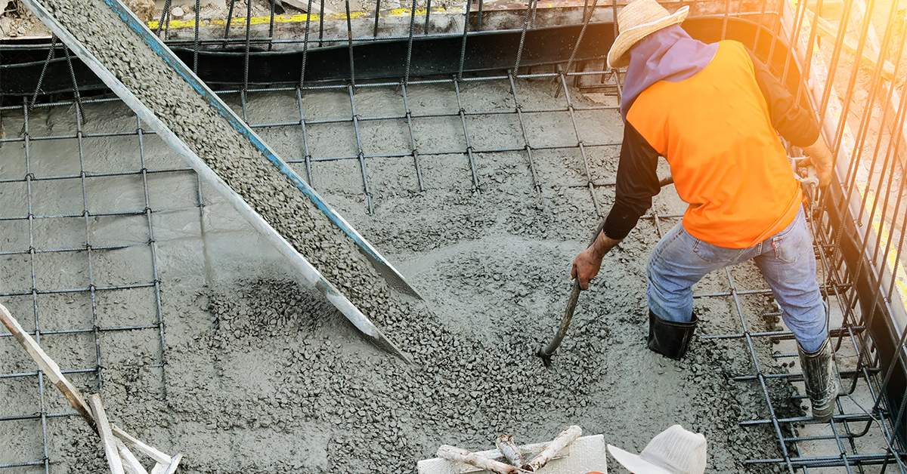
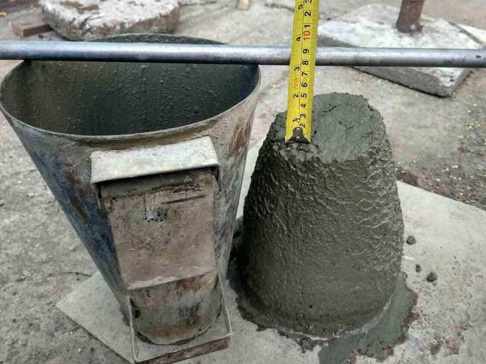
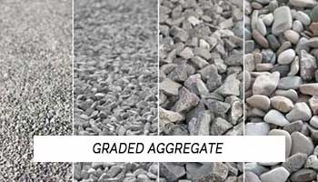
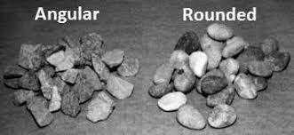

1Why mix design matters

By the time a mixer truck backs up to the forms, every question about the concrete has already been answered. How wet should it be? How strong? How much rock, how much sand, how much cement, how much water? Mix design is where those answers come from.
If you have studied the ingredients one at a time — cement, water, aggregates, admixtures — this is where the pieces come together. The question changes from what is this material to how much of it do we need. And the answer is not a formula. It is a sequence of decisions, and each decision uses the answer from the step before it. Miss one step, and every number after it is wrong.
That is the whole point of this guide: the same ten steps, in the same order, every time. Part 1 builds the road map. Part 2 works one complete mix by hand — no software, just the ACI tables and a calculator.
Cement plus water makes the glue that holds everything together. More water means more space between the cement grains, and more space means weaker concrete. Keep that in mind: it is the reason the whole process exists.
2What mix design is
Concrete mix design is the process of selecting suitable ingredients for concrete and determining their relative proportions, to produce concrete with the required characteristics.
Two questions, then: which materials, and how much of each. The materials fall into four groups.
- Cementitious materials (C). Portland cement, plus any supplementary cementitious materials such as fly ash or slag. With water, they form the paste — the glue.
- Water (W). Reacts with the cement (hydration) and, more than anything else, sets how easily the fresh concrete moves.
- Aggregates (A). Coarse and fine. The filler — about 70 percent of the volume. The paste is only about 30.
- Admixtures (Ad). The fine tuning: air entrainers, water reducers, retarders, accelerators.
Achieve the desired workability in fresh concrete and the required strength and durability in hardened concrete — at minimum cost.
All three at the same time. That is the hard part. If cost did not matter, mix design would be easy: just add more cement. But cement is the most expensive ingredient, so we use only as much as the job needs, and not a bag more.
3What a good mix must do
Break the goal into three groups of objectives, and keep all three in your head while you work.
Fresh concrete
- Consistency and workability — so the crew can place and finish it.
- Cohesiveness — so it holds together instead of bleeding.
- Minimal segregation — the rocks must not sink to the bottom.
Hardened concrete
- Compressive strength (f′c) at the specified age, usually 28 days.
- Durability against whatever the structure will face: freezing and thawing, sulfates, chlorides, water.
- Volume stability — low shrinkage, and therefore less cracking.
Economy
- Use locally available materials when you can. Hauling aggregate a hundred miles is expensive.
- Balance the first cost against the life-cycle cost. A cheap mix that fails early is not a cheap solution.
4The ten-step workflow
Here is the road map for everything that follows. Take a picture of it; we come back to it again and again.
- Select the slump.
- Select the nominal maximum aggregate size (NMAS).
- Estimate the mixing water and air content, then apply any justified adjustments.
- Select the water–cementitious materials ratio (w/cm) from the strength and durability requirements.
- Calculate the total cementitious materials.
- Estimate the coarse aggregate.
- Calculate the fine aggregate by absolute volume.
- Summarize the design-basis weights.
- Adjust for aggregate moisture and make a trial batch.
- Test the trial mixture and refine it.
The order matters. You cannot find the cement before you know the water, and you cannot find the sand before you know everything else. Each step consumes the answer from the one before it.
5Step 1 — Select the slump
Slump is a simple field test: fill a cone with fresh concrete, lift the cone, and measure how far the concrete drops (ASTM C143). It is an index of consistency — how wet the mix behaves — not a complete measure of workability. A higher slump means a more flowable concrete that is easier to place.

The job usually tells you the slump. Thin walls and columns, and anything pumped, need more; mass concrete and pavements need less. Use the ranges below as a starting point.
| Member or placement | Starting slump |
|---|---|
| Footings and slabs | 2–5 in. |
| Beams and reinforced walls | 3–5 in. |
| Building columns | 3–5 in. |
Ranges before a water-reducing admixture is added; a superplasticizer can raise them without changing the w/cm.
Here is the trap. Do not raise the slump by adding water. Extra water raises the water–cementitious materials ratio, and you lose strength. If you need more flow — for pumping, say — use a water reducer or a superplasticizer and keep the specified w/cm.
How to run the slump test, step by step →
6Step 2 — Select the nominal maximum aggregate size
Why does aggregate size matter? Think about surface area. For the same volume, big rocks have far less surface area than small rocks. Less surface area means less paste to coat the particles, and less paste means less water and less cement. So, up to a point, bigger aggregate is cheaper. That is the whole idea.

But you cannot just use huge rocks. The rock has to fit through the forms and between the bars, or it gets stuck and you get honeycombing. ACI 318 sets three limits. The nominal maximum aggregate size may not exceed:
- 1/5 of the narrowest dimension between the sides of the forms;
- 1/3 of the depth of a slab;
- 3/4 of the minimum clear spacing between reinforcing bars.
Take the largest size that satisfies all three rules and still gives good workability.
How nominal maximum size is read from a sieve analysis →
7Step 3 — Estimate the mixing water and air
Now open the ACI table (ACI PRC-211.1-22). You need two numbers to enter it: the slump and the NMAS — exactly the two things you picked in steps 1 and 2. See how the steps connect? The table gives the mixing water in lb/yd³ (kg/m³ in parentheses), and it gives the air content.
| Slump | 3/8 in. 9.5 mm | 1/2 in. 12.5 mm | 3/4 in. 19 mm | 1 in. 25 mm | 1½ in. 37.5 mm | 2 in. 50 mm |
|---|---|---|---|---|---|---|
| Non-air-entrained concrete | ||||||
| 1–2 in. | 350 (207) | 335 (199) | 315 (190) | 300 (179) | 275 (166) | 260 (154) |
| 3–4 in. | 385 (228) | 365 (216) | 340 (205) | 325 (193) | 300 (181) | 285 (169) |
| 6–7 in. | 410 (243) | 385 (228) | 360 (216) | 340 (202) | 315 (190) | 300 (178) |
| Typical entrapped air, % | 3 | 2.5 | 2 | 1.5 | 1 | 0.5 |
| Air-entrained concrete | ||||||
| 1–2 in. | 305 (181) | 295 (175) | 280 (168) | 270 (160) | 250 (148) | 240 (142) |
| 3–4 in. | 340 (202) | 325 (193) | 305 (184) | 295 (175) | 275 (165) | 265 (157) |
| 6–7 in. | 365 (216) | 345 (205) | 325 (197) | 310 (184) | 290 (174) | 280 (166) |
| Recommended total air content, % (air-entrained) | ||||||
| Mild exposure | 4.5 | 4.0 | 3.5 | 3.0 | 2.5 | 2.0 |
| Moderate exposure | 6.0 | 5.5 | 5.0 | 4.5 | 4.5 | 4.0 |
| Severe exposure | 7.5 | 7.0 | 6.0 | 6.0 | 5.5 | 5.0 |
Starting values from ACI PRC-211.1-22 for angular, crushed-stone coarse aggregate. Columns for 3 in. and 4 in. NMAS are omitted.
Two kinds of air appear in the table. Concrete that is not air-entrained still traps a little air, and the amount depends on the aggregate size — about 1.5 percent for a 1 in. NMAS. Concrete exposed to freezing and thawing gets air on purpose, with an air-entraining admixture, and the target depends on the exposure and the NMAS.
Adjust the water for particle shape
The table assumes typical aggregate — angular, crushed stone. Yours may be different, and the adjustment factor is particle shape. Crushed stone is angular: sharp edges, rough faces, lots of surface area, so it needs more water. River gravel is rounded and smooth; it rolls easily and needs less.

| Aggregate condition | Initial estimate |
|---|---|
| Angular, crushed stone | ACI table value |
| Rounded gravel | Start at −8% |
| Other shapes or blends | Use plant records |
| All mixtures | Confirm by trial batch |
For example: the table says 325 lb/yd³, and the coarse aggregate is well-rounded gravel. Start with an 8 percent reduction: 325 × 0.92 ≈ 299 lb/yd³. Remember that number; Part 2 uses it. And remember why it matters: less water at the same w/cm means less cement, and less cement means lower cost.
8Step 4 — Choose the water–cementitious materials ratio
First, an input: the required average strength
The drawings specify a compressive strength, f′c. You do not design the mix for f′c. You design it for a higher number, the required average strength f′cr — r for required.
Why overdesign? Because concrete is not perfect. Same plant, same materials, same day — and the cylinders still come out a little different every time. If you design exactly at 3,000 psi, about half of your tests will fall below 3,000 psi, and the concrete fails its statistical acceptance criteria. So we aim higher on purpose. How much higher depends on whether the plant has a strength record with low variability. With no acceptable record, ACI gives a fixed margin:
| Specified strength f′c, psi | Required average strength f′cr, psi |
|---|---|
| less than 3,000 | f′c + 1,000 |
| 3,000 to 5,000 | f′c + 1,200 |
| over 5,000 | 1.10 f′c + 700 |
The specified compressive strength f′c is the design value at the stated age. Acceptance is statistical — it is not a minimum for every single cylinder. One low cylinder does not automatically mean the concrete failed.
Then, the ratio
This is the most important number in the whole mix design. Everything about strength and durability comes back to the water–cementitious materials ratio, w/cm, by weight. A lower ratio leaves less space between the cement grains: higher strength and lower permeability.
There are two ways to pick it. Strength gives you one value, from the table below, entered with f′cr. Durability gives you another, from the exposure class — ACI 318 sets maximum w/cm values for freezing and thawing, sulfates, and other exposures.
| Required strength, psi (MPa) | Non-air-entrained | Air-entrained |
|---|---|---|
| 6,000 (41.4) | 0.41 | 0.32 |
| 5,000 (34.5) | 0.48 | 0.40 |
| 4,000 (27.6) | 0.57 | 0.48 |
| 3,000 (20.7) | 0.68 | 0.59 |
| 2,000 (13.8) | 0.82 | 0.74 |
Starting values from ACI PRC-211.1-22, ratio by weight. Interpolate between rows.
Take the lower of the two ratios. The lower w/cm always governs.
Interpolation is part of the job. Suppose f′cr = 4,200 psi for non-air-entrained concrete. The table gives 0.57 at 4,000 psi and 0.48 at 5,000 psi. 4,200 is 20 percent of the way from 4,000 to 5,000, so: 0.57 − 0.20 × (0.57 − 0.48) = 0.57 − 0.018 ≈ 0.55. Make sure you can do that on a calculator; Part 2 does it again.
9Step 5 — Calculate the total cementitious materials
This step is simple algebra. You know the water; you know the ratio. So:
Say the adjusted water is 299 lb/yd³ and the ratio came out at 0.55. Then 299 ÷ 0.55 ≈ 544 lb/yd³ of cementitious materials — the number Part 2 carries forward.
A few checks before you move on:
- This is total cementitious material, not only portland cement. Fly ash, slag, and silica fume — the supplementary cementitious materials, SCMs — can replace part of the cement.
- Use a minimum cement content only when the project actually requires one.
- Watch the paste volume. Too much paste means more shrinkage, more heat, and more money.
- Confirm everything with a trial batch. Paper is not proof.
10Step 6 — Estimate the coarse aggregate by bulk volume
The coarse aggregate is estimated by the bulk volume method. ACI gives a ratio, b/b0, where b is the bulk volume of coarse aggregate and b0 is the bulk volume of the concrete — one cubic yard. The ratio depends on two things: the NMAS, and the fineness modulus (FM) of the sand. Finer sand (a lower FM) leaves room for more coarse aggregate; coarser sand needs more mortar around it, so the b/b0 value falls as FM rises — read any row of the table from left to right and watch it drop.
| NMAS | FM 2.40 | FM 2.60 | FM 2.80 | FM 3.00 |
|---|---|---|---|---|
| 3/8 in. (9.5 mm) | 0.50 | 0.48 | 0.46 | 0.44 |
| 1/2 in. (12.5 mm) | 0.59 | 0.57 | 0.55 | 0.53 |
| 3/4 in. (19 mm) | 0.66 | 0.64 | 0.62 | 0.60 |
| 1 in. (25 mm) | 0.71 | 0.69 | 0.67 | 0.65 |
| 1½ in. (37.5 mm) | 0.75 | 0.73 | 0.71 | 0.69 |
| 2 in. (50 mm) | 0.78 | 0.76 | 0.74 | 0.72 |
ACI PRC-211.1-22. Enter with the NMAS and the fineness modulus of the fine aggregate.
Then convert the ratio into a weight:
For a 1 in. NMAS and FM = 2.60 the table gives 0.69. With a dry-rodded density of 100 lb/ft³: 0.69 × 27 × 100 = 1,863 lb/yd³, oven-dry. When the next step needs the mass on an SSD basis, multiply by (1 + absorption): 1,863 × 1.005 ≈ 1,872 lb/yd³.
b/b0 uses the oven-dry-rodded bulk density, and a bulk volume includes the voids between the stones. Bulk volume is not absolute volume. That is fine here — the sand and the paste will fill those voids in the next step — but do not mix the two ideas.
How the fineness modulus is measured →
11Step 7 — Calculate the fine aggregate by absolute volume
The fine aggregate is whatever is left. One cubic yard of concrete is one cubic yard of solid material plus air, so we compute the absolute volume of every other ingredient and subtract from 1 yd³. To convert a mass in pounds directly into cubic yards, divide by its relative density times 1,685 lb/yd³ — the weight of a cubic yard of water.
Relative density (specific gravity) compares a material's density with that of water, so water itself has a relative density of 1. Keep every mass and every relative density on the same moisture basis — oven-dry or SSD — and never mix them.
With the example numbers so far (544 lb of cementitious materials at RD 3.15, 299 lb of water, 1,872 lb SSD of coarse aggregate at RD 2.68, and 1.5 percent air):
- Cementitious materials: 544 ÷ (3.15 × 1,685) = 0.102 yd³
- Water: 299 ÷ 1,685 = 0.177 yd³
- Coarse aggregate (SSD): 1,872 ÷ (2.68 × 1,685) = 0.415 yd³
- Air: 0.015 × 1 yd³ = 0.015 yd³
Carried at full precision the sum is 0.7095 yd³ (the three-decimal figures above are rounded for display and add to 0.709), so the sand takes the remaining 0.2905 yd³. At RD 2.64: 0.2905 × 2.64 × 1,685 ≈ 1,292 lb SSD of fine aggregate.
12Steps 8–10 — Summarize, adjust for moisture, and trial-batch
Step 8 — Summarize the design-basis weights
Write the mix on one line, per cubic yard, with the moisture basis stated: cementitious materials, water, coarse aggregate (SSD), fine aggregate (SSD), and the air content. Then check three things: the w/cm you get back from water ÷ cementitious materials, the volumes summing to 1.000 yd³, and a theoretical density in the normal-weight range, roughly 140 to 150 lb/ft³.
Step 9 — Adjust for moisture and make a trial batch
The design weights assume SSD aggregate — saturated, surface-dry. Stockpiles are rarely at SSD. If the aggregate is wet, the free moisture on its surface adds water to the mix; if it is dry, it absorbs water from the mix.
The correction uses the total moisture content MC and the absorption A of each aggregate, both as fractions of the oven-dry mass:
A positive value means the aggregate adds water to the mix; a negative value means it takes water away. Adjust both the water and the aggregate weights:
For example, coarse aggregate at 1,872 lb SSD with MC = 2.0 percent and A = 0.5 percent carries about 28 lb of free water. So the coarse aggregate is batched at about 1,900 lb and the water drops from 299 to 271 lb — and then you repeat the same correction for the sand.
Step 10 — Test and refine
Batch it, then measure what you assumed: slump, air content, unit weight, and cylinders for strength at the specified age (ASTM C39). Adjust the water, the admixture dose, or the sand-to-aggregate proportion, and batch again. The ACI values are starting estimates. The trial batch is the answer.
13Key takeaways
- ACI PRC-211.1-22 gives starting estimates, not final answers.
- Use a consistent workflow: the same ten steps, in the same order, every time. Then trial-batch and adjust.
- Use the lower w/cm required by strength and durability. The lower one always governs.
- Keep the moisture basis consistent — oven-dry or SSD, never mixed. Then test and refine.
Mix design is not memorizing numbers. It is understanding the sequence. Part 2 runs the whole sequence on one real problem.